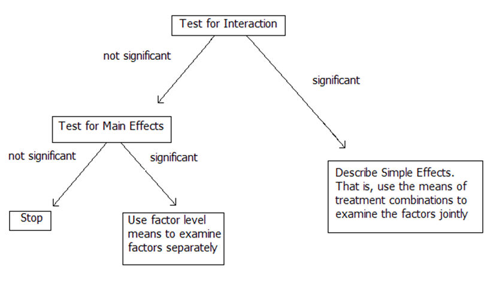
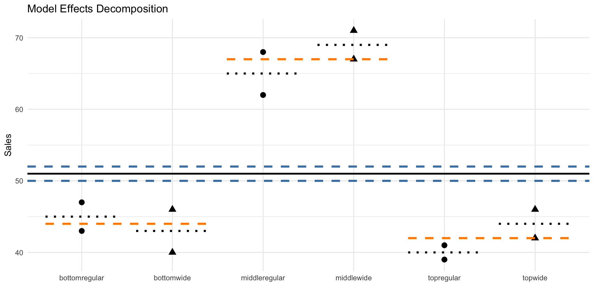
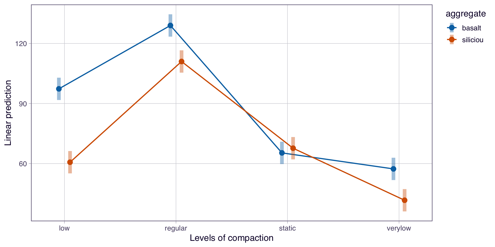

Module 4: Factorial Treatment Structure
Analyzing a Factorial
Analyzing a Factorial: Model, ANOVA, and Decision Flow
Example 4.2: Bakery
Treatment Structure: 3 x 2 Full Factorial
- Shelf Height (Bottom, Middle, Top)
- Shelf Width (Regular, Wide)
Design Structure: CRD with r = 2 stores per treatment combination.
Response: Bread Sales
What changes when we add a factor?
- We add:
- Another main effect
- An interaction term
- We must decide what effects are present before interpreting the treatment means.
The goal of the analysis is to decide which effects matter.
The Treatment Effects Model (Two-way Factorial)
\[y_{ijk}=\mu+\alpha_i+\beta_j+\alpha\beta_{ij}+\epsilon_{ijk} \text{ with } \epsilon_{ijk} \sim \text{ iid }N(0,\sigma^2)\]
\[\text{for } i=1,2,3,…,a; j=1,2,…,b; k=1,2,….,r\]
- \(y_{ijk}\): is the response (sales) from the \(k^{th}\) experimental unit (store) using the \(i^{th}\) level of Factor A (height) and \(j^{th}\) level of Factor B (width) combination
- \(\mu\): is the grand/overall mean sales
- \(\alpha_i\): is the effect of the \(i^{th}\) level of factor A (height)
- \(\beta_j\): is the effect of the \(j^{th}\) level of factor B (width)
- \(\alpha\beta_{ij}\): is the interaction effect between the \(i^{th}\) level of A (height) and \(j^{th}\) level of B (width)
- \(\epsilon_{ijk}\): the experimental error associated with the \(k^{th}\) experimental unit (store) using the \(i^{th}\) level of Factor A (height) and \(j^{th}\) level of Factor B (width) combination
ANOVA for Two-way Factorials
Just like one-way ANOVA: \(SST = SSTrt + SSE\)
For a factorial: \(SSTrt = SSA + SSB + SSAB\)
- Main effect of factor A (Height): \(SSA = rb\sum_i(\bar y_{i\cdot\cdot}-\bar y_{\cdot\cdot\cdot})^2\)
- Main effect of factor B (Width): \(SSB = ra\sum_j(\bar y_{\cdot j\cdot}-\bar y_{\cdot\cdot\cdot})^2\)
- AB Interaction Effect (Height x Width): \(SSAB = SST - SSE - SSA - SSB\)
Full ANOVA Table (Two-way)
| Source (SV) | df | SS | MS | F | |
|---|---|---|---|---|---|
| A | \(a-1\) | SSA | MSA \(=\frac{SSA}{a-1}\) | \(\frac{MSA}{MSE}\) | Do avg sales differ across shelf heights? |
| B | \(b-1\) | SSB | MSB \(=\frac{SSB}{b-1}\) | \(\frac{MSB}{MSE}\) | Do avg sales differ across shelf widths? |
| AB | \((a-1)(b-1)\) | SSAB | MSAB \(=\frac{SSAB}{(a-1)(b-1)}\) | \(\frac{MSAB}{MSE}\) | Does the effect of width depend on height? |
| Error: e.u.(AB) | \((r-1)ab\) | SSE | MSE \(=\frac{SSE}{(r-1)ab}\) | ||
| Total | \(N-1\) | SST |
Decision Flowchart

What are we testing?
Interaction
\[H_0:\text{ All } \alpha\beta_{ij} = 0 \text{ vs } H_A: \text{At least one } \alpha\beta_{ij} \ne 0\]
Main Effect of A
\[H_0:\text{ All } \alpha_{i} = 0 \text{ vs } H_A: \text{At least one } \alpha_{i} \ne 0\]
Main Effect of B
\[H_0:\text{ All } \beta_{j} = 0 \text{ vs } H_A: \text{At least one } \beta_{j} \ne 0\]
Example 4.2: Skeleton ANOVA
| Source of Variation | DF = 12 stores - 1 = 11 total df |
|---|---|
R: Fitting the Model
Let’s prep the data…
# A tibble: 6 × 4
height width sales placement
<fct> <fct> <dbl> <chr>
1 bottom regular 47 bottomregular
2 bottom regular 43 bottomregular
3 bottom wide 46 bottomwide
4 bottom wide 40 bottomwide
5 middle regular 62 middleregular
6 middle regular 68 middleregularR: Fitting the Model
Call:
lm(formula = sales ~ height + width + height:width, data = bakery_data)
Residuals:
Min 1Q Median 3Q Max
-3 -2 0 2 3
Coefficients:
Estimate Std. Error t value Pr(>|t|)
(Intercept) 51.000 0.928 54.959 2.44e-09 ***
height1 -7.000 1.312 -5.334 0.00177 **
height2 16.000 1.312 12.192 1.85e-05 ***
width1 -1.000 0.928 -1.078 0.32261
height1:width1 2.000 1.312 1.524 0.17835
height2:width1 -1.000 1.312 -0.762 0.47494
---
Signif. codes: 0 '***' 0.001 '**' 0.01 '*' 0.05 '.' 0.1 ' ' 1
Residual standard error: 3.215 on 6 degrees of freedom
Multiple R-squared: 0.9622, Adjusted R-squared: 0.9308
F-statistic: 30.58 on 5 and 6 DF, p-value: 0.0003384Recall, “sum to zero”
\(\hat\mu =\)
| Height | |
|---|---|
| Bottom | \(\hat\alpha_1=7\) |
| Middle | \(\hat\alpha_2=16\) |
| Top | \(\hat\alpha_3=\) |
| Width | |
|---|---|
| Regular | \(\hat\beta_1=-1\) |
| Wide | \(\hat\beta_2=\) |
| Regular | Wide | |
|---|---|---|
| Bottom | \(\widehat{\alpha\beta}_{11}=2\) | \(\widehat{\alpha\beta}_{12}=\) |
| Middle | \(\widehat{\alpha\beta}_{21}=-1\) | \(\widehat{\alpha\beta}_{22}=\) |
| Top | \(\widehat{\alpha\beta}_{31}=\) | \(\widehat{\alpha\beta}_{32}=\) |
Decomposition of Model Effects
Recall our statistical effects model: \(y_{ijk} = \mu +\alpha_i +\beta_j + \alpha\beta_{ij} + \epsilon_{ijk}\)

Model Diagnostics
Example: No Interaction, interpret Main Effects
Example 4.2: Bakery
Treatment Structure: 3 x 2 Full Factorial
- Shelf Height (Bottom, Middle, Top)
- Shelf Width (Regular, Wide)
Design Structure: CRD with r = 2 stores per treatment combination.
Response: Bread Sales
The Treatment Effects Model (Two-way Factorial)
\[y_{ijk}=\mu+\alpha_i+\beta_j+\alpha\beta_{ij}+\epsilon_{ijk} \text{ with } \epsilon_{ijk} \sim \text{ iid }N(0,\sigma^2)\]
\[\text{for } i=1,2,3,…,a; j=1,2,…,b; k=1,2,….,r\]
- \(y_{ijk}\): is the response (sales) from the \(k^{th}\) experimental unit (store) using the \(i^{th}\) level of Factor A (height) and \(j^{th}\) level of Factor B (width) combination
- \(\mu\): is the grand/overall mean sales
- \(\alpha_i\): is the effect of the \(i^{th}\) level of factor A (height)
- \(\beta_j\): is the effect of the \(j^{th}\) level of factor B (width)
- \(\alpha\beta_{ij}\): is the interaction effect between the \(i^{th}\) level of A (height) and \(j^{th}\) level of B (width)
- \(\epsilon_{ijk}\): the experimental error associated with the \(k^{th}\) experimental unit (store) using the \(i^{th}\) level of Factor A (height) and \(j^{th}\) level of Factor B (width) combination
Decision Flowchart
What are we testing?
Interaction
\[H_0:\text{ All } \alpha\beta_{ij} = 0 \text{ vs } H_A: \text{At least one } \alpha\beta_{ij} \ne 0\]
Main Effect of A
\[H_0:\text{ All } \alpha_{i} = 0 \text{ vs } H_A: \text{At least one } \alpha_{i} \ne 0\]
Main Effect of B
\[H_0:\text{ All } \beta_{j} = 0 \text{ vs } H_A: \text{At least one } \beta_{j} \ne 0\]
ANOVA
Analysis of Variance Table
Response: sales
Df Sum Sq Mean Sq F value Pr(>F)
height 2 1544 772.00 74.7097 5.754e-05 ***
width 1 12 12.00 1.1613 0.3226
height:width 2 24 12.00 1.1613 0.3747
Residuals 6 62 10.33
---
Signif. codes: 0 '***' 0.001 '**' 0.01 '*' 0.05 '.' 0.1 ' ' 1Do these results make sense?
Inspecting the interaction plot between height and width on bread sales, does there visually appear to be a significant interaction?
Where should we proceed?
- Interaction: We do not have enough evidence of a significant interaction effect between shelf height and shelf width on bread sales (F = 1.16; df = 2,6; p = 0.375).
- Width Main: We do not have enough evidence of a significant main effect of shelf width on bread sales (F = 1.16; df = 1,6; p = 0.323).
- Height Main: We do have evidence of a significant main effect of height on bread sales (F = 74.7; df = 2, 6; p < 0.0001).
What are the marginal mean sales for each height (sig main effect)? Which heights differ?
R: Marginal Height LSMEANS
NOTE: Results may be misleading due to involvement in interactions height emmean SE df lower.CL upper.CL
bottom 44 1.61 6 40.1 47.9
middle 67 1.61 6 63.1 70.9
top 42 1.61 6 38.1 45.9
Results are averaged over the levels of: width
Confidence level used: 0.95 R: Height pairwise comparisons
contrast estimate SE df lower.CL upper.CL t.ratio p.value
bottom - middle -23 2.27 6 -29.97 -16.03 -10.119 0.0001
bottom - top 2 2.27 6 -4.97 8.97 0.880 0.6714
middle - top 25 2.27 6 18.03 31.97 10.999 <0.0001
Results are averaged over the levels of: width
Confidence level used: 0.95
Conf-level adjustment: tukey method for comparing a family of 3 estimates
P value adjustment: tukey method for comparing a family of 3 estimates height emmean SE df lower.CL upper.CL .group
top 42 1.61 6 36.7 47.3 A
bottom 44 1.61 6 38.7 49.3 A
middle 67 1.61 6 61.7 72.3 B
Results are averaged over the levels of: width
Confidence level used: 0.95
Conf-level adjustment: sidak method for 3 estimates
P value adjustment: tukey method for comparing a family of 3 estimates
significance level used: alpha = 0.05
NOTE: If two or more means share the same grouping symbol,
then we cannot show them to be different.
But we also did not show them to be the same. What can we conclude?
- For bread placed on the middle shelf, the estimated mean bread sales is 67 (s.e. = 1.61).
- This is estimated to be 25 more sales than for bread placed on the top shelf (t = 10.99; df = 6; p < 0.0001) and 23 more sales than for bread placed on the bottom shelf (t = 10.12; df = 6; p = 0.0001).
Example: Interaction Present, interpret Simple Effects
Example 4.3: Asphalt
A civil engineer conducted an experiment to evaluate differences among a set of compaction methods for their effect on the tensile strength of test specimens and to determine to what extent the aggregate type affected the comparisons among the compaction methods. Twenty-four specimens of the asphalt concrete were constructed, and the eight treatment combinations were randomly assigned to the specimens.
Example 6.2 from Design of Experiments: Statistical Principles of Research Design and Analysis, 2nd Edition by Robert O. Kuehl.
Example 4.3: Asphalt
Factors: + Aggregate Type: Basalt, Silicous + Compaction Method: Static, Regular kneading, Low kneading, Very low kneading
Design: CRD with \(r=3\) specimens per treatment combination (N = 24)
Response: Tensile strength
Note: Because we didn’t specify levels = in factor(), the levels of aggregagte and compation are in alphabetical order
Example 4.3: Statistical Effects Model
\[y_{ijk}=\mu+\alpha_i+\beta_j+\alpha\beta_{ij}+\epsilon_{ijk} \text{ with } \epsilon_{ijk} \sim \text{ iid }N(0,\sigma^2)\]
\[\text{for } i=1,2; j=1,2,3,4; k=1,2,3\]
- \(y_{ijk}\): is the observed tensile strength for the \(k^{th}\)s specimen receiving the \(i^{th}\) Aggregate and \(j^{th}\) Compaction
- \(\mu\): is the overall mean tensile strength
- \(\alpha_i\): is the effect of the \(i^{th}\) level of Aggregate
- \(\beta_j\): is the effect of the \(j^{th}\) level of Compaction
- \(\alpha\beta_{ij}\): is the interaction effect between the \(i^{th}\) level of Aggregate and \(j^{th}\) level of Compaction
- \(\epsilon_{ijk}\): the experimental error associated with the \(k^{th}\) specimen receiving the \(i^{th}\) Aggregate and \(j^{th}\) Compaction
Decision Flowchart
ANOVA
Analysis of Variance Table
Response: strength
Df Sum Sq Mean Sq F value Pr(>F)
aggregate 1 1734 1734.0 182.526 3.628e-10 ***
compaction 3 16244 5414.5 569.947 < 2.2e-16 ***
aggregate:compaction 3 1145 381.7 40.175 1.124e-07 ***
Residuals 16 152 9.5
---
Signif. codes: 0 '***' 0.001 '**' 0.01 '*' 0.05 '.' 0.1 ' ' 1We have evidence to conclude there is a significant interaction between aggregate and compaction on tensile strength (F = 1145; df = 3,16; p < 0.0001).
The effect of aggregate on tensile strength varies across different levels of compaction.
Where should we proceed?
- Interaction: We have evidence to conclude there is a significant interaction between aggregate and compaction on tensile strength (F = 1145; df = 3,16; p < 0.0001).
- Aggregate Main: don’t care.. misleading.
- Compaction Main: don’t care.. misleading.
How does the mean tensile strength for aggregates change depending on the compaction method?
What combination of aggregate and compaction lead to higher tensile strengths?
R: Interaction Plots
Joint Pairwise Comparisons: Aggregate x Compaction
aggregate compaction emmean SE df lower.CL upper.CL .group
basalt regular 129.0 1.78 16 123.4 134.6 A
siliciou regular 111.0 1.78 16 105.4 116.6 B
basalt low 97.3 1.78 16 91.8 102.9 C
siliciou static 67.7 1.78 16 62.1 73.2 D
basalt static 65.3 1.78 16 59.8 70.9 DE
siliciou low 60.7 1.78 16 55.1 66.2 DE
basalt verylow 57.3 1.78 16 51.8 62.9 E
siliciou verylow 41.7 1.78 16 36.1 47.2 F
Confidence level used: 0.95
Conf-level adjustment: sidak method for 8 estimates
P value adjustment: tukey method for comparing a family of 8 estimates
significance level used: alpha = 0.05
NOTE: If two or more means share the same grouping symbol,
then we cannot show them to be different.
But we also did not show them to be the same. R: Aggregate | Compaction
Slice Tests
compaction = low:
model term df1 df2 F.ratio p.value
aggregate 1 16 212.281 <0.0001
compaction = regular:
model term df1 df2 F.ratio p.value
aggregate 1 16 51.158 <0.0001
compaction = static:
model term df1 df2 F.ratio p.value
aggregate 1 16 0.860 0.3676
compaction = verylow:
model term df1 df2 F.ratio p.value
aggregate 1 16 38.754 <0.0001
Simple Effects
compaction = low:
contrast estimate SE df lower.CL upper.CL t.ratio p.value
basalt - siliciou 36.67 2.52 16 31.33 42.0 14.570 <0.0001
compaction = regular:
contrast estimate SE df lower.CL upper.CL t.ratio p.value
basalt - siliciou 18.00 2.52 16 12.67 23.3 7.152 <0.0001
compaction = static:
contrast estimate SE df lower.CL upper.CL t.ratio p.value
basalt - siliciou -2.33 2.52 16 -7.67 3.0 -0.927 0.3676
compaction = verylow:
contrast estimate SE df lower.CL upper.CL t.ratio p.value
basalt - siliciou 15.67 2.52 16 10.33 21.0 6.225 <0.0001
Confidence level used: 0.95 R: Compaction | Aggregate
Slice Tests
aggregate = basalt:
model term df1 df2 F.ratio p.value
compaction 3 16 338.956 <0.0001
aggregate = siliciou:
model term df1 df2 F.ratio p.value
compaction 3 16 271.167 <0.0001
Simple Effects
aggregate = basalt:
contrast estimate SE df lower.CL upper.CL t.ratio p.value
low - regular -31.7 2.52 16 -38.9 -24.5 -12.583 <0.0001
low - static 32.0 2.52 16 24.8 39.2 12.716 <0.0001
low - verylow 40.0 2.52 16 32.8 47.2 15.894 <0.0001
regular - static 63.7 2.52 16 56.5 70.9 25.299 <0.0001
regular - verylow 71.7 2.52 16 64.5 78.9 28.477 <0.0001
static - verylow 8.0 2.52 16 0.8 15.2 3.179 0.0269
aggregate = siliciou:
contrast estimate SE df lower.CL upper.CL t.ratio p.value
low - regular -50.3 2.52 16 -57.5 -43.1 -20.000 <0.0001
low - static -7.0 2.52 16 -14.2 0.2 -2.782 0.0582
low - verylow 19.0 2.52 16 11.8 26.2 7.550 <0.0001
regular - static 43.3 2.52 16 36.1 50.5 17.219 <0.0001
regular - verylow 69.3 2.52 16 62.1 76.5 27.550 <0.0001
static - verylow 26.0 2.52 16 18.8 33.2 10.331 <0.0001
Confidence level used: 0.95
Conf-level adjustment: tukey method for comparing a family of 4 estimates
P value adjustment: tukey method for comparing a family of 4 estimates